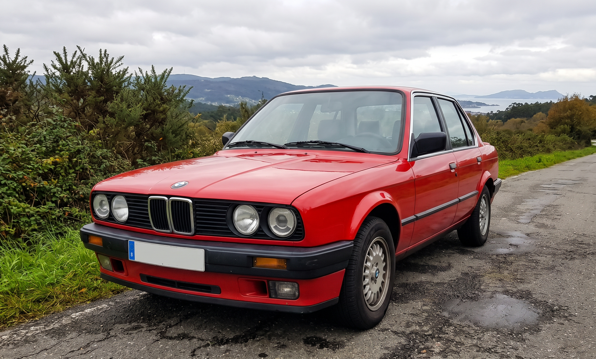
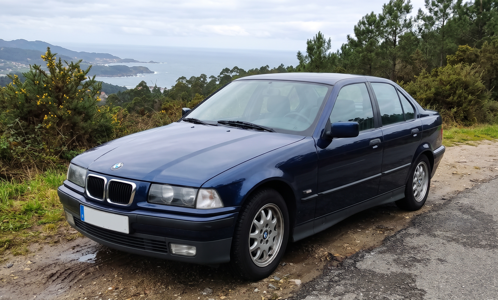
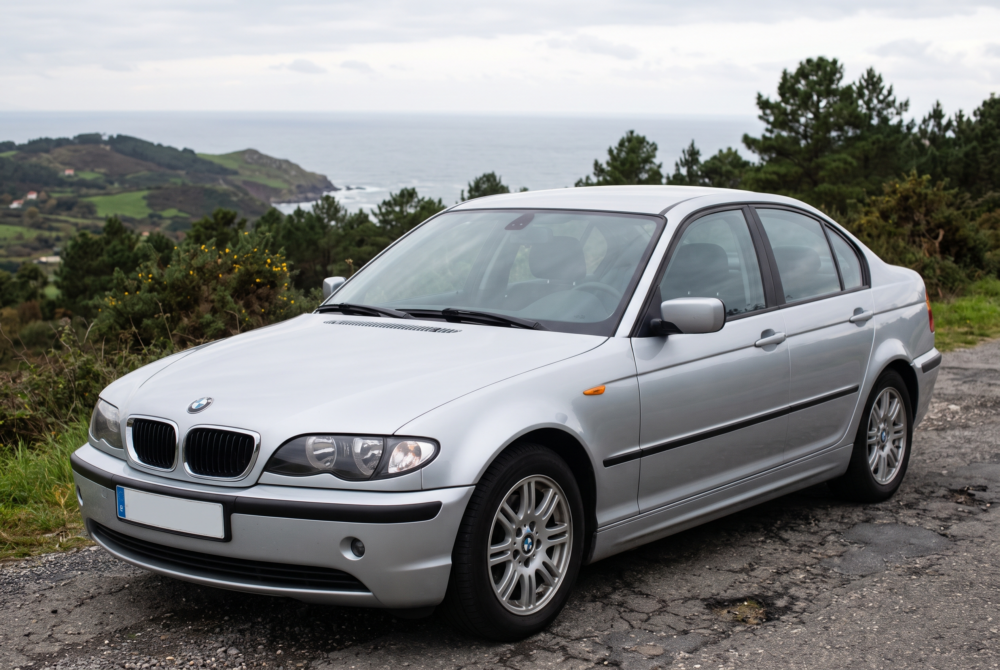

Los tres pilares del club
Estas son las tres generaciones de la Serie 3 que protagonizan nuestras salidas por carreteras gallegas. Todas destacan por su propulsión trasera y puesta a punto.

El clásico ochentero por excelencia.

Estabilidad y eje trasero multibrazo.

El último Serie 3 de tacto puramente analógico.
Calendario de rutas del trimestre
La salida se realiza siempre a las 09:30 h con el depósito lleno. La ruta de invierno se divide en dos etapas de fin de semana.
| Mes | Ruta | Fecha | Punto de encuentro |
|---|---|---|---|
| Octubre | Tramo Costa da Morte | 18/10 | Área de servicio AP-9 (Santiago Norte) |
| Noviembre | Miradores de las Rías Baixas | 15/11 | |
| Diciembre | Ruta Serra do Courel | 12/12 (Etapa 1) | Plaza Mayor de Quiroga (Lugo) |
| 13/12 (Etapa 2) | |||
| En caso de alerta meteorológica por lluvia intensa o hielo, la ruta se aplazará al domingo siguiente. | |||
Vocabulario habitual en nuestras salidas
- Código E (Entwicklung)
- Denominación interna de desarrollo que identifica cada generación de chasis (E30, E36, E46).
- Coche escoba
- Socio veterano que cierra el grupo con herramienta básica por si surge algún imprevisto mecánico.
- Reagrupamiento
- Parada breve en un punto seguro tras un tramo de curvas para que nadie pierda el enlace.
¿Necesitas consultar referencias de despiece originales para tu unidad? Revisa el catálogo de RealOEM (se abre en una pestaña nueva).